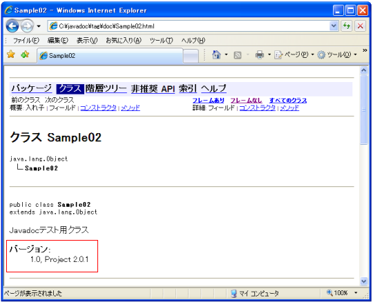

- Home ›
- Javadocの記述 ›
- Javadocタグ
@versionタグ
「@version」タグはクラスなどに対して記述し、ソフトウェアのバージョンについて指定するために使います。
@version version-text 著者について指定 記述場所 ： 概要、パッケージ、クラス、インターフェース 複数記述 ： 可 出力形式 ： バージョン その他 ：「-version」オプションが必要
ソフトウェアの現在のバージョンを明記する場合に使います。同じコメント内で複数回指定することが可能です。
/** * コメントの説明文 * @version 1.0 * @version Project 2.0.1 */
複数の「@version」タグが指定された場合、出力される時にそれぞれのバージョンがカンマ(,)＋スペースで区切られて1行にまとめられて出力されます。
似たタグとして「@since」がありますが、こちらは現在のバージョンではなく導入されたバージョンを明記する場合に使われます。
注意点としてJavadocの「-version」オプションを指定した場合だけ出力が行われます。(「-version」オプションについては「「-version」オプション」を参照して下さい)。
サンプル
では簡単な例で試してみます。
/**
* Javadocテスト用クラス
* @version 1.0
* @version Project 2.0.1
*/
public class Sample02{
/**
* サイズの設定
* @param width 幅
* @param height 高さ
*/
public void setSize(int width, int height){
}
}
では上記のソースコードを「Sample02.java」の名前で保存し、その保存したディレクトリで次のように実行して下さい。
javadoc -d doc -version Sample02.java
「doc」ディレクトリ内にある「Sample02.html」ファイルをブラウザで見てください。

クラスの説明の箇所に「バージョン」として「@version」に記述したバージョンが表示されています。複数の「@version」タグを指定した場合は、まとめて1つの行の中に表示されます。
( Written by Tatsuo Ikura )

著者 / TATSUO IKURA
初心者～中級者の方を対象としたプログラミング方法や開発環境の構築の解説を行うサイトの運営を行っています。